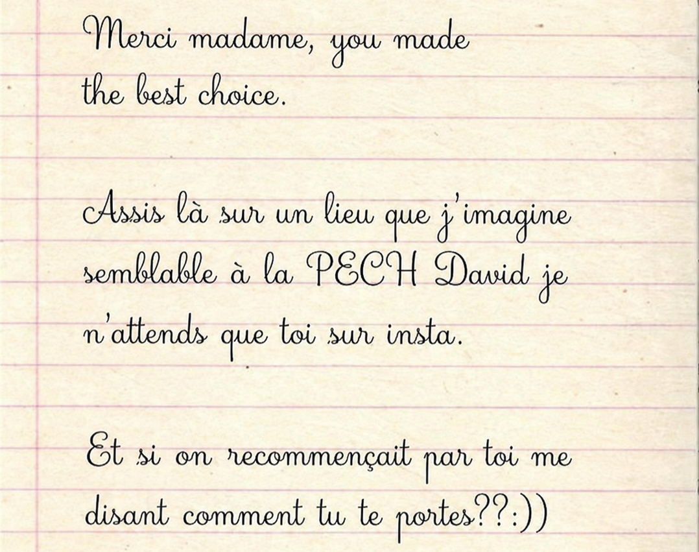

Entres le code secret pour débloquer la suite. Indice, les 4 premiers mots de Coming Up Roses :
Code incorrect. Réessayez.

Entres le code secret pour débloquer la suite. Indice, les 4 premiers mots de Coming Up Roses :


